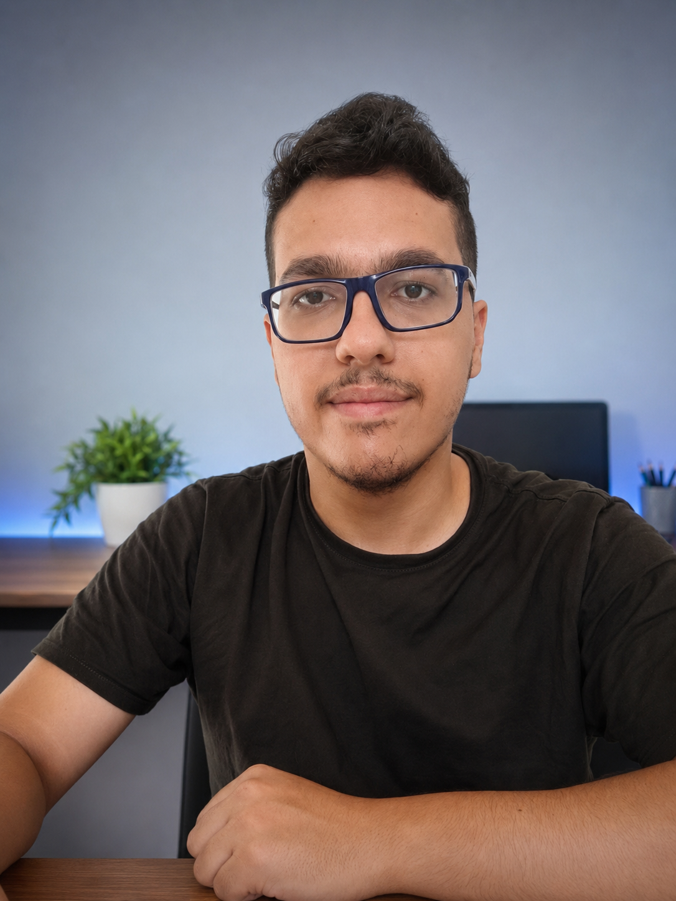

Sou bacharel em Sistemas de Informação e atualmente estou cursando Engenharia de Software também (3º semestre).
Comecei a me interessar por programação desde cedo por conta dos games e isso despertou minha curiosidade:
"Como isso tudo funciona? Tipo, o que acontece por trás?".
Hoje foco principalmente no desenvolvimento web, atuando em front e back-end. Gosto de trabalhar em equipe e estou sempre buscando aprender novas tecnologias.
Quando não estou programando, estou jogando video-games e testando algumas ideias loucas que vem à cabeça kk.
Fala comigo